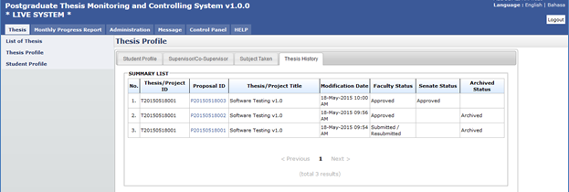

Thesis History tab contains the proposal progress history starting from its submission by the student untill its approval by the Senate. It captures the date of

Figure 8: Thesis Tab – Thesis History
Steps:-
It is only for view information.
Click Back to Student List button to return back to Student List search page